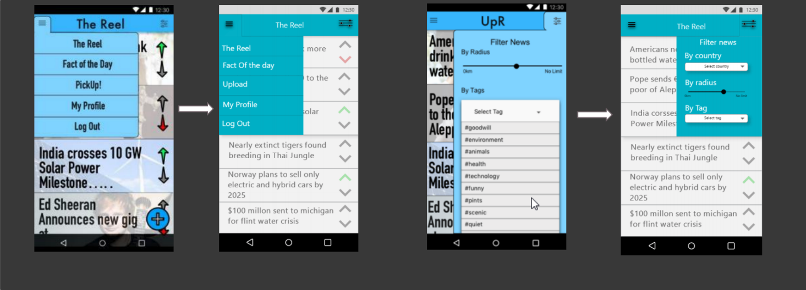

Introduction
This case study looks at a module from second year where we were tasked as a group to build a mobile app concept from scratch.
Our idea was to bring about a platform where users could share positive news they found to other users. At the time we especially felt that there
was this never ending cycle of doom and gloom constantly on the news. Having a smartphone on us at all times means we can see the latest tragedy that
just happened from around the globe. While It is important to be informed and share these types of stories it can give a user a skewed view of the world,
a completely negative view. With UPR we wanted to bring a platform for anybody to share impactful or joyful journalism from around the globe,
to give hope in a sea of despair.
Original Design Concept
Below is the original design concept that my group created in second year. It is based around an up vote and down vote system where any user can submit
an article allowing the community to decide which positive articles are at the top of the feed.

Redesign
Nearing the end of my degree I decided to return to this project to change the concept slightly and redesign the UI as my skills with Sketch App have futher
developed and I wanted to bring the app to life with a modern UI. Following the redesign, I decided to remove the up and downvote system. The new system involved
a simple 'new' page and a 'trending'. The trending page is determined by how many favourites the article gets. I removed the 'Fact Of The Day' page and replaced it
with 'Picks' which would be staff picks on our favourite news articles that we find interesting or believe our users would love. The reasoning for removing the up and
downvote system was to try stop any sort of manipulation with the news which can sometimes be seen on the platform reddit which has a similar up and downvote system.
We want there to be no agenda on this app, just a way for people to see positive news.
A link to the video prototype can be found below
WATCH ME